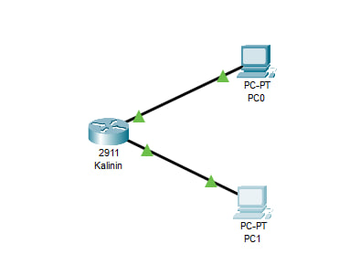
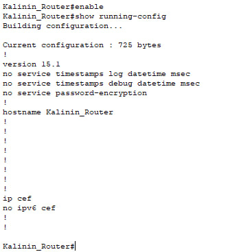

Описание лабораторной работы
Целью работы является создание и настройка простой сети в Cisco Packet Tracer с изменением hostname, IP-адресов в соответствии с порядковым номером, а также экспорт конфигурации и сборка документации.
Изменения в топологии
- Hostname роутера изменён на:
Kalinin_Router - Третий октет IP-адреса:
192.168.24.X— где 24 это номер в списке - Вторая сеть использует:
192.168.25.X
Топология сети
На схеме видно два ПК, подключённых к роутеру, каждый в своей подсети. Визуально показано, как соединены интерфейсы FastEthernet и как IP-адреса привязаны к устройствам.
Конфигурация роутера
На скриншоте видно команды hostname, interface, ip address и результат команды show running-config. Это позволяет проверить правильность настройки IP-адресов и имени устройства.
Выводы
Работа выполнена успешно. Все устройства корректно настроены, IP-адреса заданы согласно требованиям. Сеть работает стабильно, пинги проходят, конфигурации сохранены и экспортированы. Создан HTML-отчёт и загружен в Git-репозиторий.
Ссылки
- Ссылка на репозиторий GitHub
- Файл топологии:
KT_1ITD_KalininVM.pkt